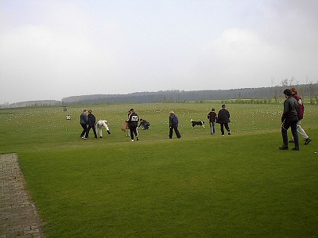
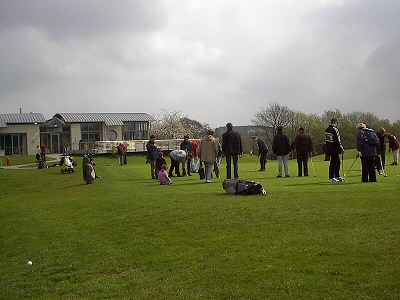
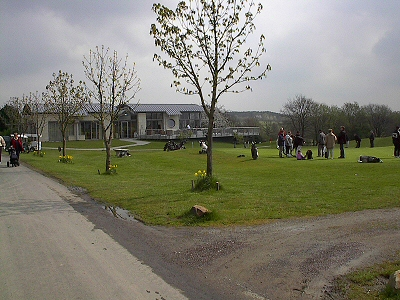
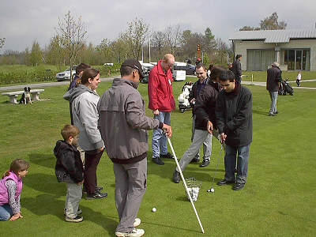
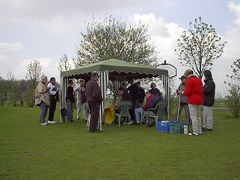
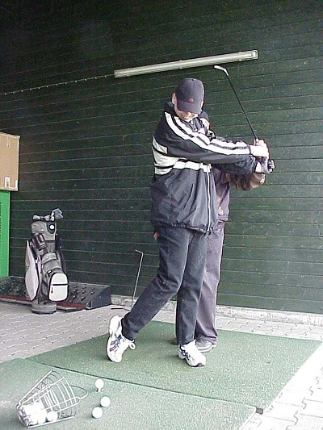

Golfkurs für Blinde
Am Freitag, den 19. und am Samstag, den 20. April 2002 machten auf Gut Neuenhof in Unna-Fröndenberg über ein Dutzend Studenten und Auszubildende des Zentrums für blinde und sehbehinderte Studierende der Fachhochschule Giessen-Friedberg (BliZ) erste Erfahrungen mit dem Golfsport.
Angespornt von Neuenhof-Golfer und Blinden-Europameister Ivars Weide, der dazu in Zusammenarbeit mit dem Deutschen Blindengolfclub und seinem Präsidenten Gerhard Starck, so wie Prof. Erdmuthe Meyer zu Bexten (BliZ) eingeladen hatte.
Zeigen wollten die Organisatoren den Studierenden, die bislang keinerlei Erfahrungen mit dem Golfen gemacht haben, dass der Sport Lebensfreude und -mut bringen kann und dass es kein Sport nur für Sehende ist. Was Ivars Weide längst eindrucksvoll bewies und die Informatik-Azubis vom BliZ auch schnell selbst feststellten.
Eigens für dieses bundesweit erste Treffen von blinden Studenten auf dem Golfplatz hatte der Ausstatter Karstadt aus seinen Golf-Shops ausreichend Ausrüstung zur Verfügung gestellt, damit alle Teilnehmer an den beiden Tagen möglichst intensive Erfahrungen machen konnten.
Stets unterstützt von Ivars Weise und Gerhard Starck ("Golfer mit dem Handicap stark sehbehindert oder blind"), sowie den Trainern des Golfclubs Gut Neuenhof Clive B. Westermann und Michael Elliott. "Der Club will den vielen Betroffenen aufzeigen," so Gerhard Starck, "dass Golf spielen eine weitere Alternative ist, Freizeit mit einem Partner oder Freund zu gestalten." Das taten allesamt nicht nur gestern Nachmittag auf der Anlage, sondern auch beim Frühlingsfest am Freitagabend im Clubhaus "Il Campo". Der Deutsche Blinden Golf-Club e.V. wurde letztes Jahr gegründet. Präsident ist der blind gewordene und golfspielende Gerhart Starck und Vizepräsident ist der ebenfalls blinde, frühere Eishockey-Bundesligaspieler Ivars Weide.
Der Deutsche Blinden Golf-Club e.V. hat sich zur Aufgabe gemacht Blinden und Sehbehinderten zu zeigen, dass Golf eine Sportart ist, die auch diese Menschen mit Erfolg und viel Spaß ausüben können. Der Club möchte den Betroffenen ein Stück Lebensqualität zurückgeben.
Bilder
Studenten, Mitarbeiter, Azubis und Bordercollie Schila beim Golfbälle einsammeln

Die Gruppe übt patten (einlochen)

Die Gruppe übt patten (einlochen)

Golftrainer Michael Elliott hilft Ali Gürler beim Patten

Die Gruppe beim Kuchenessen

Ingo Blechert beim Abschlagen